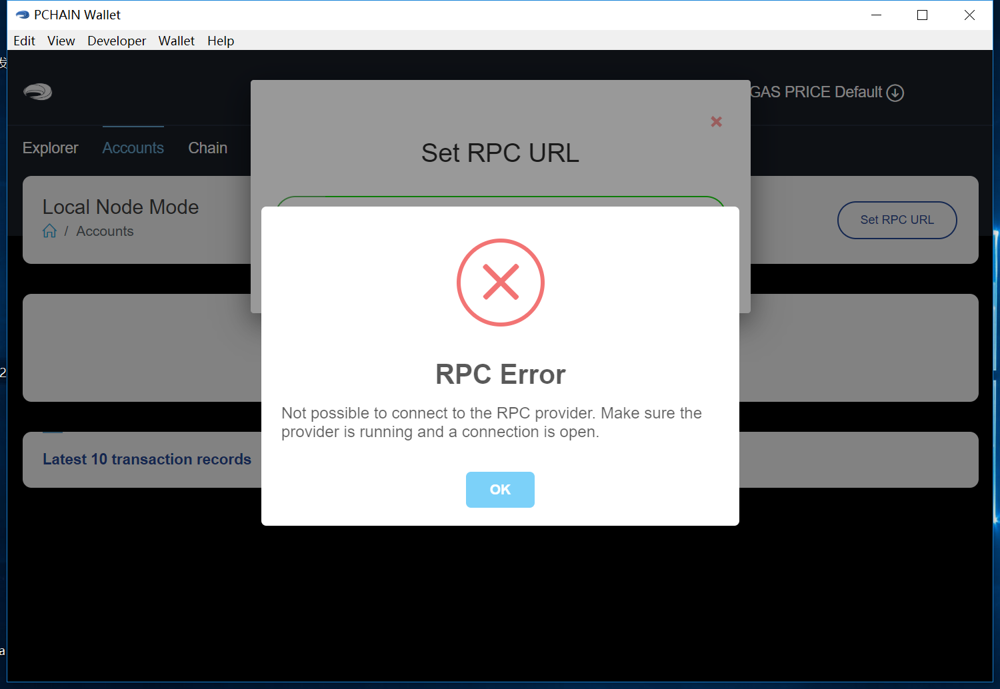

Q&A¶
Can I run main chain and child chain on one machine?¶
Yes, currently Pchain’s mainnet has one main chain and one child chain, you can run and mine both chain on one machine.
Why can’t I connect to my node from PIWallet?¶
If you are trying to use “local node mode” in PIWallet and get this error:
Make sure you have done things bellow:
- install and run pchain on your remote node
- run pchain with flag “–rpc –rpcaddr=0.0.0.0”
- open port 6969 to your local ip
Here is an example which run PIWallet on PC to connect to pchain running on AWS EC2: On AWS EC2, we run pchain with this command:
~/pchain/bin/pchain --datadir=~/pchain/.pchain --rpc --rpcapi=eth,web3,admin,debug,tdm,miner,personal,chain,txpool,del --childChain=child_0 --rpcaddr=0.0.0.0
And then we open port 6969 to my PC in security group of my AWS EC2

Why my PIWallet doesn’t show anything under local node mode?¶
If you are trying to use “local node mode” in PIWallet and connect to your node succesfully but can’t find any information shown in PIWallet, probably because you haven’t transport your keystore file to your node. If you wanna send any transactions by PIWallet local node mode, you should keep your keystore file under “yourdatadir/.pchain/chainid/keystore/”. So the structure of your datadir should look like this:
datadir/
-chaininfo.db/
-config.toml
-nodekey
-nodes/
-tx3cache/
-pchain/
-data/
-geth/
-pchain.ipc
-priv_validator.json
-keystore/ //you should put your keystore file under here
-child_0/
-data/
-geth/
-pchain.ipc
-priv_validator.json
-keystore/ //you should put your keystore file under here